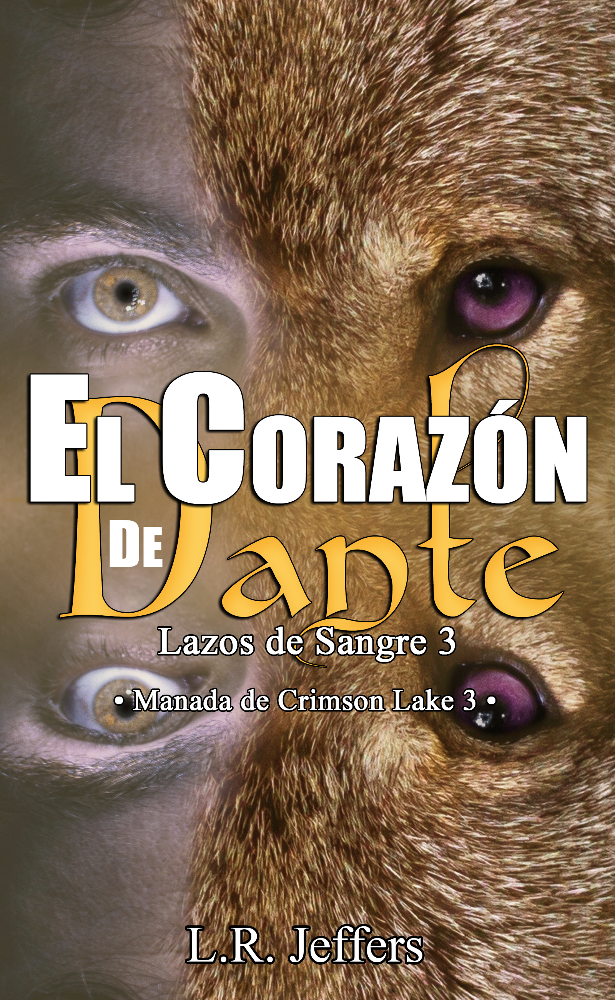

El corazón de Dante
«El odio puede ser el primer paso hacia un amor que lo cura todo.»
También disponible en formato digital y papel.
Sinopsis
Dante Iadeluca pasó los últimos siete años en cautiverio, como la mascota favorita de un grupo de sádicos que además eran cambiaformas lobos. Despojado de su dignidad, siendo abusado y humillado hasta que no pudo reconocerse a sí mismo, se convirtió en una triste burla del hombre valiente que fue. Roto y sin esperanzas, Dante pensó que nunca sería libre.
Hasta que Rhys Crimson Badmoon lo llevó a su manada, una en la que es tratado como una persona otra vez, amado y protegido.
Sin embargo, Dante no se adapta bien a su nueva familia. Tan herido como está, lleno de temores y odio, él no confía en nadie, en especial no en los cambiaformas. Todo lo que Dante quiere es que lo dejen en paz, pero Urián, un joven con rostro de ángel y un par de ojos violetas como salidos de un cuento de hadas —que además es un asesino sanguinario—, no parece entenderlo.
Siguiéndolo a todas partes, como su autodenominado guardián, él afirma que están destinados. ¿El problema?: Dante es heterosexual y no quiere un compañero, no en especial si es un cambiaformas. No si es un maldito y asqueroso lobo.
Leer extracto gratuito
Capítulo 1
Urián se mantuvo alejado mientras Arian y el resto de la manada ayudaban a descargar a los ex prisioneros de Liam, al igual que hizo durante el viaje de regreso. Miró a Dante y su corazón comenzó a doler cuando este le ignoró por completo. Dante, incluso su nombre era hermoso como él, pero el hombre no lo quería cerca. Bueno, mierda, ¿y qué esperaba? Hizo justo lo que Nyx le advirtió.
«Quiero a mi compañero», gimoteó su lobo. Urián bufó.
—Cállate, es tu culpa. Lo asustaste.
«Pero lo quiero. Él huele tan bien, tan delicioso, que no puedo contenerme», le respondió en un susurro. Urián estuvo de acuerdo; además de que tenía ese acento exótico que enviaba una punzada directo a su pene. Tan asustado como su hombre sexy lo estaba, sin embargo, él no podía hacer ningún movimiento.
Después de que los recién llegados fueron ubicados en el refugio, los miembros de la manada comenzaron a trabajar para hacerlos sentir bienvenidos: prepararon comida y trajeron líquidos, algunas frutas, medicamentos y ropa que cada familia donó de buena gana. Incluso los pequeños ayudaron, tratando de animar a otros niños, y cambiaron a su forma de lobos para jugar con ellos.
Cuando la conmoción hubo pasado, algunos miembros se agolparon alrededor del refugio. Ellos parecían haber encontrado a sus compañeros, por lo que estaban nerviosos y solicitaban la presencia de Rhys para que lo resolviera. Urián, no obstante, se mantuvo en una esquina, lejos de los curiosos. Tan inquieto como estaba, no se atrevía a mirar hacia adentro. Con los dedos tamborileando sobre su pierna y su habitual trenza medio tejida, él respiró hondo.
Tres sombras se interpusieron entre Urián, las luces de los faroles y la luna. Alzando la cabeza, se encontró con Gabriel, Arian y Rhys. El Alfa y su pareja se veían felices como siempre, tomados de las manos; por un segundo, una punzada de envidia lo atravesó al recordar la mirada de desprecio que obtuvo de su propio compañero.
—Hola, Rain —saludó Arian, demasiado amable—. ¿Y tu hermana?
Urián movió un hombro, desanimado por completo.
—Se fue, dijo que apestaba y le hacía falta una ducha. Yo también, pero como que… no puedo.
Rhys le miró con el ceño fruncido. Su Alfa no estaba molesto; no percibía hostilidad emanando de él, solo preocupación.
—¿Por qué? ¿Estás lastimado? ¿Quieres que llame a un médico?
Él sacudió la cabeza y su mirada mortificada se fijó en Rhys y Arian.
—Yo... creo que… Yo como que encontré a mi pareja.
Rhys se atragantó con su propia saliva, Gabriel dejó salir un silbido, Arian se mantuvo en silencio. Sí, esto tenía que ser incómodo en más de un nivel, sobre todo porque hace poco Urián había madurado, convirtiéndose en un adulto según las costumbres de su gente.
—¿Y cuál es ella? —preguntó Gabriel.
Urián se apretó el labio con los dientes, con la mirada perdida. Él sabía que, gracias a las nuevas leyes de la manada, nadie debía rechazarlo debido al sexo o raza de su pareja; sin embargo, era más fácil decirlo que hacerlo. Aún ahora, con Rhys acoplado con otro hombre y tantas relaciones homosexuales como había, algunos miembros continuaban mirando con desagrado dichas uniones. Pero eso no era lo peor, sino el hecho de que Dante era humano y ninguno de ellos se había apareado con uno jamás. ¿Cómo se lo tomarían? ¿Iban a rechazarlos? Bueno, si es que lograba hacer que Dante mirara en su dirección.
Respirando profundo para armarse de valor, se repitió las mismas palabras de siempre: «Soy un lobo, soy un Cazador, no un cachorro», y miró a sus interlocutores.
—Es ese pelinegro de allá, el humano.
Gabriel volvió a silbar.
—Oh, cachorro, tú estás jodido. ¿No está un poco viejo para ti? Él debe de rondar los treinta.
Urián suspiró. Mierda, claro que sí, y era una de las cosas que más le atraían.
—Ya sé, pero él es tan sexy que mi lobo no puede resistirse. Yo ni siquiera consideré sexy a un macho antes... —Se frotó los párpados. Los Cazadores no lloraban, en especial él—. Cuando veníamos, traté de hablarle y se alejó. Él me teme. Dijo que soy un lobo y que le doy asco.
Arian se inclinó frente a Urián, con una sonrisa amable y algo en sus ojos, usualmente fríos, que no supo descifrar. ¿Era lástima? Él no necesitaba nada de eso. Sin embargo, cuando la mano de Arian se posó en su hombro, él se relajó. Era extraño recibir este tipo de atención de uno de los Asesinos más letales. Él todavía recordaba la paliza que Arian le dio a Kean, el hermano menor del Alfa. Diablos, casi lo había matado; rompió cada uno de sus huesos y golpeó a Gabriel y Cedric cuando trataron de detenerle. Solo Rhys lo consiguió, y Urián pensaba que solo debido a que eran pareja.
Por supuesto, cuando eso sucedió ellos mantenían su relación oculta. Ahora se habían reclamado uno al otro, lo cual no se vio jamás en ninguna manada, y lideraban juntos. Nadie le negaba nada al Compañero-Alfa y el único con más autoridad que él era Rhys, ni siquiera el Beta, Gabriel.
—Dale tiempo, Rain —dijo—. Él ahora está confundido y ha pasado cosas horribles, tú debiste verlo. Sé que te gusta y tu lobo lo necesita y quieres reclamarlo y joderlo duro ahí mismo. O que él te joda duro. No lo sé. Pero él necesita un amigo en este momento, alguien que le enseñe a confiar.
Urián estuvo de acuerdo. No lo consideró antes, por estar confundido y deseoso, pero Dante pudo haber sido herido realmente por Liam y sus lobos. La sola idea hizo doler su corazón. Él no quería que nadie hiciera daño de nuevo a su hombre sexy.
—Yo podría hacer eso.
Arian asintió.
—Ve lento, dale espacio, no lo ahogues.
—Está bien.
Arian se irguió y sujetó la mano de Rhys.
—Ahora, ¿por qué no vas a casa y tomas una ducha? Duerme, tranquiliza a tu lobo y regresa mañana. Dale un día.
Urián movió la cabeza con tanto entusiasmo que le dolió el cuello.
—Sí, señor. —Hizo una inclinación hacia ellos tres—. Alfa, Compañero-Alfa, Beta. Nos vemos.
Arian rio por lo bajo, apretándose contra Rhys. Urián sacudió sus ropas y se echó a correr. Un día, él podría darle más que eso. Todo el tiempo que a Dante le hiciera falta para sanar las heridas de su cuerpo y alma. Él estaría ahí, velando por su seguridad, aunque fuera desde las sombras. Porque eso hacían los compañeros.
Y él no sería la excepción.
💡 Este extracto representa aproximadamente el 10% del libro. Para continuar la historia, disponible en Amazon.
Contenido exclusivo
Estamos reescribiendo El corazón de Dante para ofrecerte la mejor experiencia. Cuando la nueva versión esté lista, añadiremos aquí:
- ✨ Ficha detallada de Dante y Urián "Rain"
- 🎵 Playlist oficial de la historia
- 🎁 Escena eliminada o POV alternativo
¿Quieres ser el primero en saber cuándo está listo? Únete al Círculo Oscuro.